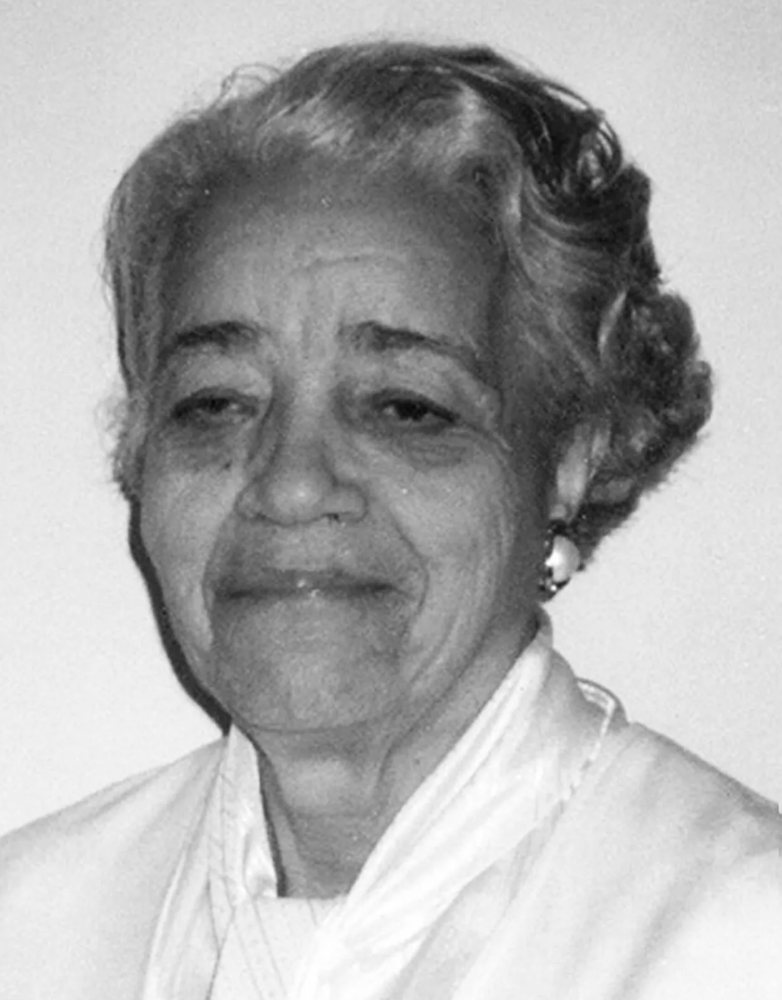
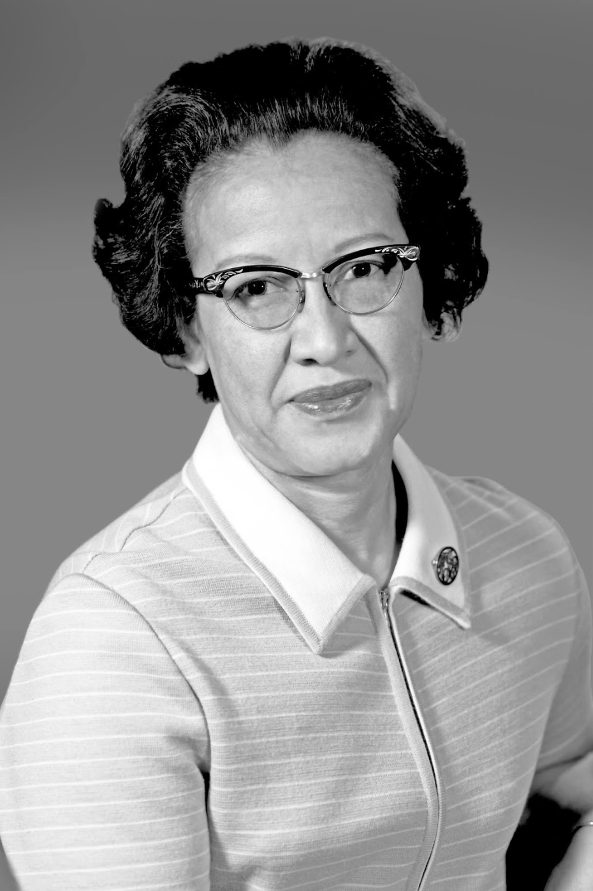

Welcome to the Website
I developed this inclusive website to support and uplift women, LGBTQ individuals, people with disabilities, and people of color (POC) in STEM fields. The platform showcases inspiring stories of successful individuals who have overcome various challenges, promoting diversity and representation in STEM. Our "STEM Diversity Spotlight" section highlights remarkable figures from underrepresented backgrounds in STEM, amplifying their contributions and accomplishments. Visitors are encouraged to nominate and vote for inspiring individuals, fostering a supportive community where all voices are heard and celebrated. Through this initiative, we aim to celebrate achievements and encourage equitable growth in STEM for everyone.
Featured Person of the Month: Dorothy Vaughan
Dorothy Vaughan, a remarkable black woman born in 1910, encountered enormous challenges in mid-century America. She joined the National Advisory Committee for Aeronautics (NACA), which subsequently became NASA, since she had an early interest in mathematics and engineering. Unfortunately, racial segregation and gender prejudice forced her and other black women to confine themselves to the West Area Computing Unit, where they were considered as human "computers" with limited options. Dorothy persevered in the face of difficulty, acquiring the FORTRAN programming language and guiding her team's move to electronic computers. Her skill and leadership won her the position of NASA's first black supervisor, breaking down barriers and inspiring future STEM generations. Her legacy is a monument to tenacity, persistence, and the continued struggle for equality.
Dorothy Vaughan overcame societal restrictions that tested her strength as a black woman in the United States during her trip. Initially employed as a teacher, she pursued her passion for mathematics and engineering by joining NACA and confronting the harsh reality of apartheid. Despite having to deal with different facilities and limited resources, she embraced technology's potential, learning the FORTRAN programming language and becoming a visionary leader. Dorothy's remarkable abilities led to her appointment as NASA's first black supervisor, shattering glass ceilings and leaving an indelible mark on the fight for equal rights. Her tale is an uplifting reminder of the incredible potential that people have when given the opportunity to achieve and pursue their aspirations, regardless of race or gender.
 Want to nominate someone?
Send an email using the set up down below. Be sure to include the person's full name and a way I can contact them. Make sure you have the person's permission before nominating them.
Featured Projects
This website recognizes individuals' remarkable achievements, ranging from STEM-related initiatives to everyday interests. We encourage innovation and collaboration by exhibiting their work. We want to build a varied and welcoming community where all accomplishments are honored and people can share their hobbies with the rest of the world.
The people who made these creations are: Carlie, he created this amazing build on ROBLOX studious!